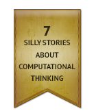

<!DOCTYPE html>
<html>
    <head>
        <meta http-equiv="Content-Type" content="text/html; charset=UTF-8" />

        <meta property="og:title" content="Ilustrovaná kniha zlých argumentov (Preklad vyhotovil Filip Klinovský)" />
        <meta property="og:description" content="Táto kniha je určená nováčikom v oblasti logického usudzovania, a konkrétne tým, ktorí – povedané Pascalovými slovami – sú stvorení tak, ţe sa im učí najlepšie prostredníctvom zraku. Vybral som malú skupinu zvyčajných chýb v argumentovaní a prostredníctvom ľahko zapamätateľných ilustrácií, doplnených o mnoţstvo príkladov, som ich zvizualizoval. Dúfam, ţe sa čitateľ prostredníctvom týchto stránok poučí o najbeţnejších nástrahách v argumentácii, a ţe bude schopný ich identifikovať a v praxi sa im vyhnúť." />
        <meta property="og:image" content="https://bookofbadarguments.com/sk/images/1.jpg" />
        <meta property="og:type" content="website" />
        <meta property="og:url" content="https://bookofbadarguments.com/" />
        <meta property="og:site_name" content="Ilustrovaná kniha zlých argumentov" />
        <meta property="fb:admins" content="542418566" />
        
        <title>Ilustrovaná kniha zlých argumentov (Preklad vyhotovil Filip Klinovský)</title>

        <link rel="stylesheet" href="../css/jquery-ui.css" type="text/css" />
        <link rel="stylesheet" href="../css/colorbox.css" type="text/css" />
        <link rel="stylesheet" href="https://netdna.bootstrapcdn.com/font-awesome/4.2.0/css/font-awesome.css">
        <link rel="stylesheet" href="css/styles.css" type="text/css" />

        <script src="https://ajax.googleapis.com/ajax/libs/jquery/1.7.2/jquery.min.js" type="text/javascript"></script>
        <script src="https://ajax.googleapis.com/ajax/libs/jqueryui/1.8.4/jquery-ui.min.js" type="text/javascript"></script>

        <script src="../js/jquery.colorbox-min.js"></script>
        <script src="../js/modernizr.2.5.3.min.js"></script>
        <script src="../js/jquery.easing.1.3.min.js"></script>

        <link href="https://fonts.googleapis.com/css?family=Open+Sans:400,300,600" rel="stylesheet" type="text/css" />

        <script type="text/javascript">
          var _gaq = _gaq || [];
          _gaq.push(['_setAccount', 'UA-42350635-1']);
          _gaq.push(['_trackPageview']);

          (function() {
            var ga = document.createElement('script'); ga.type = 'text/javascript'; ga.async = true;
            ga.src = ('https:' == document.location.protocol ? 'https://ssl' : 'http://www') + '.google-analytics.com/ga.js';
            //ga.src = ('https:' == document.location.protocol ? 'https://' : 'http://') + 'stats.g.doubleclick.net/dc.js';
            var s = document.getElementsByTagName('script')[0]; s.parentNode.insertBefore(ga, s);
          })();
        </script>

        <!-- tealium code for PRH -->
        <script type="text/javascript">
          var utag_data = {}
        </script>
        <script type="text/javascript">
          (function(a,b,c,d){
          a='//tags.tiqcdn.com/utag/random/rhcorp-author/prod/utag.js';
          b=document;c='script';d=b.createElement(c);d.src=a;d.type='text/java'+c;d.async=true;
          a=b.getElementsByTagName(c)[0];a.parentNode.insertBefore(d,a);
          })();
        </script>
    </head>
    <body>
        <div id="fb-root"></div>
        <script>(function(d, s, id) {
          var js, fjs = d.getElementsByTagName(s)[0];
          if (d.getElementById(id)) return;
          js = d.createElement(s); js.id = id;
          js.src = "//connect.facebook.net/en_US/all.js#xfbml=1&appId=256637467814064";
          fjs.parentNode.insertBefore(js, fjs);
        }(document, 'script', 'facebook-jssdk'));</script>

        <!--<div class="corner-ribbon top-left brown shadow hidden-xs hidden-sm">1.8 million visitors</div>-->
 
        <!-- force background image to load first -->
        
        
        
        
        
        
        
        
        
        
        
        
        

        <div class="topbar">
            
            <div class="contributors" style='left:60px'>
                <a href="https://bookofbadchoices.com">
                    
                </a>
            </div>
            <!--<div class="contributors">
                <a href="https://github.com/almossawi/badarguments">
                    
                </a>
            </div>-->
            <a href="/thebook/?from=main_page">
                
            </a>
            <div id="zoom_info"></div>
        </div>

        <!-- languages -->
        <div class="container-languages">
            <div class="languages">
                <a href="/">English</a>
                <a href="/es/">Español</a>
                <a href="/ar/">العربية</a>
                <a href="/pt/">Português</a>
                <a href="/pt-br/">Português brasileiro</a>
                <a href="/zh-cn/">中文</a>
                <a href="/fi/">Suomeksi</a>
                <a href="/sk/" class="selected">Slovenčina</a>
                <a href="/he/">עברית</a>
                <a href="/cz/">Česky</a>
                <a href="/bg/">Български</a>
                <a href="/fr/">Français</a>
                <a href="/jp/">日本語版</a>
            </div>
        </div>

        <div class='buy-slovak'>Kúpte si slovenskú verziu v tlačenej podobe od vydavateľstva <a class='underline' href="http://www.citadella.sk/sk/ali-almossawi/ilustrovan%C3%A1-kniha-zl%C3%BDch-argumentov-kniha">Citadella!</a></div>

        <div class="container">
          <div class="left-arrow"><a href="#"></a></div>
          <div class="right-arrow"><a href="#"></a></div>

          <div class="loading">Načítava sa</div>
          <div class="howto"></div>

          <div class="flipbook" style="position:relative">
            <div id="cover" class="left">
                
            </div>
            <div id="blank_page" class="left">
            </div>
            <div class="inner-title-page right right-option1">
                <div class="page-content">
                    <p class="translated-by">
                        <span class="translated-into">Preklad</span><br />
                        <span class="authors">Filip Klinovský</span>
                        <br /><br />
                        <span class="contact">klinovsky.filip@gmail.com &middot; 13.07.2015</span>
                    </p>
                    
                </div>  
            </div>

            <!-- endorsements -->
            <div class="page-break"></div>
            <div class="left left-option2">
                <div class="page-number"></div>
                <div class="page-title"></div>
                <div class="page-content">
                    <p style="text-align:justify;margin-top:280px;width:520px;font-size:7.5pt;line-height:14px">
                        Účelom tejto stránky je len to, aby táto kniha vyzerala ako skutočná kniha. Na prvej alebo druhej strane vidieť kusy textu tlačeného malým písmom, za ktorými následujú výrazy ako napríklad © 2013. Všetky práva vyhradené. A tak ďalej. Vytlačené v Spojených štátoch amerických. Vydavateľ tu môže rovnako uviesť prózu na odstrašenie potenciálnych zlodejov. Bez písomného súhlasu nesmie byť žiadna časť tejto knihy akýmkoľvek spôsobom použitá alebo šírená. Za týmto textom zvyčajne nasledujú zodva riadky o vydávateľovi a za nimi akási číselná postupnosť.<br /><br />
                        Pre viac informácií, prosím, kontaktujte JasperCollins Publishers, 99 St. Marks Pl New York, NY 94105.<br />
                        12 13 14 15 16 LP/SSRH 10 9 8 7 6 5 4 3 2 1<br /><br />
                        Ale teraz vážne, všetko, čo potrebujete vedieť je, že toto dielo je zdieľané pod
                        <a href="http://creativecommons.org/licenses/by-nc/3.0/">Creative Commons BY-NC</a> licenciou. To znamená, že ho môžete voľne zdieľať a prispôsobovať pre nekomerčné použitie pod podmienkou, že uvediete autora.<br /><br />
                        Zodpovednosť za obsah a formu: Ali Almossawi, Ilustrácie: Alejandro Giraldo.
                    </p>
                </div>
            </div>
            <div class="right right-option2">
                <div class="page-number"></div>
                <div class="page-title"></div>
                <div class="page-content">
                    <p class="endorsement"><span style="font-size:18px">&ldquo;</span>Milujem túto ilustrovanú knihu zlých argumentov. Bezchybný prehľad chýb.<span style="font-size:18px">&rdquo;</span></p>
                    <p class="endorsement_author">&#8212;Prof. Alice Roberts, anatóm, moderátor pre<br />&ldquo;The Incredible Human Journey&rdquo;, BBC</p>

                    <p class="endorsement2"><span style="font-size:18px">&ldquo;</span>Skvelo čitateľné zhrnutie nástrah a techník argumentácie. Nemôžem si vybaviť lepší spôsob ako sa učiť alebo si zopakovať základy logickej debaty. Príjemná knižka.<span style="font-size:18px">&rdquo;</span></p>
                    <p class="endorsement_author2">&#8212;Aaron Koblin, šéf tvorby Data Arts tímu, Google</p>
                </div>
            </div>

            <!-- translator's intro -->
            <div class="page-break"></div>
            <div class="left left-option2">
                
            </div>
            <div class="right right-option2">
                <div class="page-number"></div>
                <div class="page-title"></div>
                <div class="page-content">
                    <p>V texte sa často narába s anglickým výrazom „reasoning“, prípadne „logical reasoning“. Chcel by som čitateľov oboznámiť s tým, že som tento výraz prekladal synonymne ako „usudzovanie“, „argumentácia“ alebo „dôvodenie“. Ten-ktorý preklad som si vyberal podľa kontextu. Hoci by našli jemné rozdiely medzi výrazmi „usudzovanie“ ako činnosť, ktorej výsledkom býva veta, resp. súbor viet s istou pravdivostnou hodnotnou a „argumentácie“ ako činnosť, ktorej výsledkom nemusí byť iba veta, resp. súbor viet s istou pravdivostnou hodnotou, ale aj presvedčenie oponenta, rozhodol som sa pre účely tohto prekladu spomenutý fakt ignorovať v prospech plynulosti textu.</p>
                    <p>Na niektorých miestach sa prekrývajú moje s autorovými poznámkami. Je ľahké ich rozoznať. Autorové sú písané <b>týmto spôsobom</b>, pričom sa začínajú formuláciou „<b>Pôvodná poznámka</b>:“.</p>
                    <p>V prípade niektorých „kultúrnych“ ilustrácií som si dovolil s vedomím autora pozmeniť originálny text. Tak sa udialo na týchto stranách:</p>
                    <p>s. 51. Z anglického originálu „For example, <i>Boston is the largest city in Massachusetts.</i>“ na „Napríklad, <i>Bratislava je najväčšie slovenské mesto.</i>“.</p>
                    <p class="justify-last">s. 16. Z anglického originálu „How can you be against faith when we take leaps of faith all the time, with friends and potential spouses and investments? Here, the meaning of the word “faith” is shifted from a spiritual belief in a creator to a risky undertaking.“ na „Ako môžeš byť</p>
                </div>
            </div>

            <div class="page-break"></div>
            <div class="left">
                <div class="page-number"></div>
                <div class="page-title"></div>
                <div class="page-content">
                    <p>proti viere, keď veríš vodičovi autobusu, ktorý ťa vezie do školy alebo kolegovi horolezcovi, ktorý ťa pri šplhaní istí?“</p>
                    <p>s. 20.  Z anglického originálu „The fallacy has two specific types: ‘after this, therefore because of this’ and ‘with this, therefore because of this.’“ na „Tento druh neplatného argumentu má dva typy: ‚po X, teda pretože X.‘ a ‚s X, teda pretože X.‘“.</p>
                    <p>s. 24. Z anglického originálu „For example, asking ten people on the street what they think of the president's plan to reduce the deficit can in no way be said to represent the sentiment of the entire nation.“ na „Napríklad, spýtanie sa desiatich  ľudí na ulici, čo si myslia o pláne NR SR ohľadom zníženia deficitu, v žiadnom prípade nemôžeme považovať za reprezentáciu postoja celého národa.“</p>
                    <p>s. 32. Z anglického originálu „My opponent is calling for a healthcare system, that would resemble that of socialist countries. Clearly, that would be unacceptable.“ na „Môj oponent žiada systém zdravotníctva, ktorý sa podobá tomu americkému. Je jasné, že to je neprijateľné.“.</p>
                    <p>Keďže nie je v slovenskej literatúre ustálená nomenklatúra falošných argumentov, uvádzam zoznam názvov argumentov v anglickom jazyku:</p>
                    <p>Argument založený na konzekvenciách – Appeal to consequences<br />
                    Strašiak – Strawman</p>
                </div>
            </div>
            <div class="right right-option1">
                <div class="page-number"></div>
                <div class="page-title"></div>
                <div class="page-content">
                    <p>Odvolávanie sa na irelevantnú autoritu – Appeal to Irrelevant Authority<br />
                    Dvojznačnosť – Equivocation<br />
                    Falošná dilema – False dilema<br />
                    V tomto prípade to nie je ten prípad – Not a Cause for a Cause<br />
                    Odvolávanie sa na strach – Appeal to Fear<br />
                    Unáhlené zovšeobecňovanie – Hasty generalization<br />
                    Odvolávanie sa na nevedomosť – Appeal to Ignorance<br />
                    Žiaden pravý Škót – No True Scotsman<br />
                    Dedičný klam – Genetic Fallacy<br />
                    Asociačný klam – Guilt by Association<br />
                    Potvrdzovanie konzekventu – Affirming the Consequent<br />
                    Odvolávanie sa na pokrytectvo – Appeal to Hypocrisy<br />
                    Šikmá plocha – Slippery Slope<br />
                    Odvolávanie sa na väčšinu – Appeal to  the Bandwagon<br />
                    Ad hominem – Ad Hominem<br />
                    Usudzovanie v kruhu – Circular Reasoning<br />
                    Skladba a Deľba – Composition and Division<br />
                    <p>Napokon by som čitateľa chcel upozorniť na to, že v texte nájde originálne názvy prác. Hoci niektoré sú preložené aj do slovenčiny (napríklad Orwellova Zvieracia farma), iné nie sú (napríklad Gulov Handbook of Logical Fallacies). Z dôvodu koherentnosti textu som sa rozhodol názvy kníh neprekladať.</p>
                </div>
            </div>
            <!-- end translator's intro -->

            <div class="page-break"></div>
            <div class="left">
                
            </div>
            <div class="right right-option3">
                
            </div>

            <!-- who is this book for -->
            <div class="page-break"></div>
            <div class="left">
                
            </div>
            <div class="right right-option1">
                <div class="page-number">3</div>
                <div class="page-title"></div>
                <div class="page-content">
                    <p style="margin-top:100px">Táto kniha je určená nováčikom v oblasti logického usudzovania, a konkrétne tým, ktorí – povedané Pascalovými slovami – sú stvorení tak, ţe sa im učí najlepšie prostredníctvom zraku. Vybral som malú skupinu zvyčajných chýb v argumentovaní a prostredníctvom ľahko zapamätateľných ilustrácií, doplnených o mnoţstvo príkladov, som ich zvizualizoval. Dúfam, ţe sa čitateľ prostredníctvom týchto stránok poučí o najbeţnejších nástrahách v argumentácii, a ţe bude schopný ich identifikovať a v praxi sa im vyhnúť.</p>
                </div>
            </div>

            <!-- preface -->
            <div class="page-break"></div>
            <div class="left left-option2">
                
            </div>
            <div class="right right-option2">
                <div class="page-number">5</div>
                <div class="page-title"></div>
                <div class="page-content">
                    <p>Množstvo literatúry o logike a logických klamoch je obrovské. Originalita tejto knihy spočíva v používaní ilustrácií na to, aby opísala zopár bežných chýb v argumentácii, ktoré znečisťujú  značnú časť ľudskej diskusie.</p>
                    <p>Ilustrácie sú sčasti inšpirované alegóriami, ako napríklad Orwellovou <i>Animal Farm</i> a sčasti úsmevnými nonsensami, ako napríklad príbehy a básne Lewis Carolla. No narozdiel od spomínaných prác, v <i>An Illustrated Book of Bad Arguments</i> nespája jednotlivé obrazy žiadny príbeh; ilustrácie obsiahnuté v tejto knihe spolu, inak ako štýlom a témou, nesúvisia, čo umožňuje bezproblémové používanie jednotlivých ilustrácii bez kontextu.Na každý logický klam je vymedzená iba jednu stránka,  stručnosť textu teda nie je náhodná.</p>
                    <p>Čítanie o tom, čo človek nemá robiť, je v skutočnosti obohacujúci zážitok. Vo svojej knihe <i>On Writing</i> Stephen King píše: „Človek sa najlepšie naučí ako nepísať tak, že bude čítať zlú prózu.“ Keď čítal neskutočne zlý román, opísal ho ako „literárny ekvivalent vakcíny proti kiahňom“ [King]. Matematik George Pólya vraj raz povedal, že pri učení matematiky musíme okrem správneho pochopenia látky aj vedieť, ako ju nepochopiť [Pólya]. Táto práca sa zameriava najmä na to, čo človek pri argumentovaní robiť nemá.<sup>1</sup></p>
                    <p class="block">* * * *</p>

                    <p class="footnote" style="bottom:-60px"><sup>1</sup> <b>Pôvodná poznámka:</b> Ak čítateľ chce rozumieť logickým klamom viac, nech pozrie T. Edward Damesovu knihu o falošnom usudzovaní.</p>
                </div>
            </div>

            <div class="page-break"></div>
            <div class="left">
                <div class="page-number">6</div>
                <div class="page-title"></div>
                <div class="page-content">
                    <p>Pred mnohými rokmi som strávil istý čas písaním software-ových špecifikácií v jazyku prvorádovej predikátovej logiky. Bol to fascinujúci spôsob usudzovania o invariantoch  jazykom diskrétnej matematiky narozdiel od zvyčajného jazyka – angličtiny.<sup>2</sup> Tento spôsob so sebou priniesol jasnosť tam, kde bol priestor pre dvojznačnosť a presnosť tam, kde boli pochybnosti.</p>
                    <p>Počas tohto obdobia som preštudoval zopár kníh o propozičnej logike, či už moderných alebo stredovekých, z ktorých jednu napísal Robert Gula a niesla názov <i>A Handbook of Logical Fallacies</i>. Gulova kniha mi pripomenula zoznam, ktorý som si spísal asi pred desiatimi rokmi. Obsahoval pravidlá ako správne argumentovať. Bol to vlastne výsledok niekoľkých rokov hádania sa s ľuďmi na online fórach. Obsahoval veci ako napríklad: „skús nezovšeobecňovať“.<sup>3</sup> Dnes je mi to už jasné, no za čias strednej školy mi tento „objav“ prišiel ako významný.</p>
                    <p>Rýchlo sa ukázalo, že formalizácia usudzovania môže viesť k užitočným veciam ako sú napríklad: jasnosť myslenia a vyjadrovania sa, objektívnosť a väčšia istota.  Schopnosť analyzovať argumenty taktiež pomáha nadobudnúť cit, vďaka ktorému sa dajú rozoznať pravdepodobne zbytočné debaty.</p>
                    <p class="justify-last">Veci a udalosti, ktoré ovyplvňujú naše životy a spoločnosť, v ktorej žijeme, – napríklad prezidentské voľby alebo občianske slobody, – zvyčajne spôsobujú, že ľudia diskutujú</p>

                    <p class="footnote" style="bottom:-60px">
                        <sup>2</sup> Autor žije v USA.<br />
                        <sup>3</sup> Napríklad „Keď som raz bol na Slovensku, prechádzal som cez nejakú dedinu. Bola veľmi špinavá. Teda, na Slovensku majú špinavé dediny.“
                    </p>
                </div>
            </div>
            <div class="right right-option1">
                <div class="page-number">7</div>
                <div class="page-title"></div>
                <div class="page-content">
                    <p>o politike a ďalších svojich názoroch. Pri sledovaní takýchto diskusií môžeme nadobudnúť pocit, že pozoruhodne veľkej časti z nich chýba správne usudzovanie. Cieľom niektorých prác o logike je pomôcť ľuďom spoznať nástroje a postupy, vďaka ktorým sa „vyčistí“ ich usudzovanie. Toto nakoniec vedie ku konštruktívnejším debatám.</p>
                    <p>Keďže presviedčanie nie je súčasťou iba logiky, ale aj iných vecí, je dobré nespúšťať ich zo zreteľa. Z nich asi najznámejšou je rétorika. Taktiež nám môžu zísť na um zásady ako princíp úspornosti<sup>4</sup> alebo pojmy ako „bremeno dôkazu“. Zvedavý čítateľ sa môže dočítať viac v širokom rozsahu  literatúry venujúcej sa vyššie spomenutému.</p>
                    <p>Napokon, logické zákony nie sú zákonmi prirodzeného sveta, ani sa na nich nezakladá celé  ľudské usudzovanie. Ako tvrdí Marvin Minsky, bežné usudzovanie „sedliackym rozumom“ je obtiažne vysvetliť jazykom logiky. Platí to tiež pre analógie. Minsky dodáva: „Logika nevysvetľuje, ako rozmýšľame o nič viac, než gramatika vysvetľuje, ako rozprávame.“ [Minsky]. Logika nevytvára nové pravdy, ale umožňuje nám verifikovať konzistenciu a koherentnosť existujúcich reťazcov myslenia. Práve kvôli tomuto dôvodu sa ukazuje ako efektívny nástroj pre analýzu a odovzdávanie myšlienok a argumentov.</p>
                    <p style="padding-top:20px;margin-left:270px;font-style:italic">&#8211; A.A., San Francisco, Júl 2013</p>

                    <p class="footnote" style="bottom:-60px"><sup>4</sup> Princíp úspornosti (niekedy pomenovaný Occamova britva) v skratke hovorí, že pokiaľ jeden jav môžem vysvetliť rovnako dobre dvoma teóriami, kvôli jednoduchosti je najlepšie vybrať si tú, ktorá má najmenej predpokladov.</p>
                </div>
            </div>
            <!-- end preface -->

            <!-- logical fallacies -->
            <div class="page-break"></div>
            <div class="left left-option2">
                
            </div>
            <div class="right right-option1">
                <div class="page-title"></div>
                <div class="page-content">
                    <p style="margin-top:130px;padding-left:80px;padding-right:80px">„Základným pravidlom je, že sa nesmiete nechať oklamať a, že ste tie najnaivnejšie tvory.“</p>
                    <p style="padding-left:300px">&#8212;Richard P. Feynman</p>
                </div>
            </div>

            <div class="page-break"></div>
            <div class="left">
                <div class="page-number">10</div>
                <div class="taxonomy">Obsahový klam <b>&rsaquo;</b> Návnada <b>&rsaquo;</b> <b>Argument založený na konzekvenciách</b></div>
                <div class="page-title">Argument založený na konzekvenciách</div>
                <div class="page-content">
                    <p>Argumentácia  založená na konzekvenciách spočíva vo vyjadrení sa v prospech alebo neprospech <i>platnosti</i> propozície na základe dôsledkov plynúcich z jej odmietnutia či prijatia. To, že propozícia vedie k nepriaznivému výsledku ešte neznamená, že je nepravdivá. V podobnom duchu platí aj opak. Totiž iba samotný fakt, že propozícia má priaznivé dôsledky, ju ešte nerobí pravdivou. Ako povedal David Hackett, „nie je pravda, že kvalita, ktorá sa spája s následkom, je pripísateľná aj príčine.“<sup>5</sup></p>
                    <p>V prípade priaznivých konzekvencií môže argument apelovať na túžby adresátov, ktoré, čas od času, môžu mať formu nesplniteľných prianí. V opačnom prípade môže takýmto argumentom apelovať  na obavy publika. Napríklad, zvážme Dostojevského vetu, „Ak Boh neexistuje, potom je dovolené všetko.“ Opomenúc diskusiu ohľadom nezávislosti morálky, apel na ponuré dôsledky čisto materialistického poňatia sveta nehovorí nič o tom, či je alebo nie je antecedent<sup>6</sup> pravdivý.</p>
                    <p>Nemali by sme zabudnúť na to, že takéto argumenty sú chybné, iba ak sa týkajú propozícii s objektívnou pravdivostnou hodnotou a nie pokiaľ sa týkajú takých rozhodnutí alebo postojov  [Curtis], ako napríklad keď sa politik postaví proti zdvíhaniu daní zo strachu, že takýto čin nepriaznivo postihne životy voličov.</p>

                    <p class="footnote" style="bottom:-40px">
                        <sup>5</sup> Napríklad, partia ľudí by bez dovolenia vošla na súkromný pozemok. Pri ich neoprávnenom pohybe po pozemku pristihnú zlodeja pri krádeži. Ten sa naľaká a ujde. To, že vstup partie na pozemok zabránil ďalšej neoprávnenej činnosti, čo by sme mohli označiť za "dobré", ešte neznamená, že vstup samotný je "dobrý".<br />
                        <sup>6</sup> Tá časť implikácie, ktorá následuje za „ak“ a pred „tak ...“. V tomto prípade „Boh existuje,“.
                    </p>
                </div>
            </div>
            

            <div class="page-break"></div>
            <div class="left left-option2">
                <div class="page-number">12</div>
                <div class="taxonomy">Obsahový klam <b>&rsaquo;</b> Návnada <b>&rsaquo;</b> <b>Strašiak</b></div>
                <div class="page-title">Strašiak</div>
                <div class="page-content">
                    <p>Pod výrazom „postaviť strašiaka“ rozumieme úmyselné karikovanie niečieho argumentu s cieľom zaútočiť skôr na karikatúru, ako na pôvodný argument. Prekrúcanie, nepresné citovanie, nepravdivý výklad a prehnané zjednodušovanie sú nástrojmi tohto logického klamu. Strašiak je zvyčajne absurdnejší než pôvodný argument, a to ho robí zraniteľnejším voči útokom. Navyše môže zlákať hovorcu aby obraňoval túto absurdnejšiu podobu argumentu.</p>
                    <p>Napríklad, <i>Môj oponent sa vás snaží presvedčiť, že sme sa vyvinuli z opíc, ktoré zoskočili zo stromov; aké absurdné tvrdenie.</i> Toto je jasná dezinterpretácia evolučnej biológie, ktorá tvrdí, že pred miliónmi rokov ľudia a opice zdieľali spoločného predka. Dezinterpretovať myšlienku je omnoho jednoduchšie ako vyvrátiť jej dôkazy.</p>
                </div>
            </div>
            

            <div class="page-break"></div>
            <div class="left">
                <div class="page-number">14</div>
                <div class="taxonomy">
                    Obsahový klam <b>&rsaquo;</b> Návnada <b>&rsaquo;</b> Dedičný klam <b>&rsaquo;</b> <b>Odvolávanie sa na irelevantnú autoritu</b>
                </div>
                <div class="page-title">Odvolávanie sa na irelevantnú autoritu</div>
                <div class="page-content">
                    <p>Odvolanie sa na autoritu je odvolávanie sa na náš zmysel pre skromnosť [Engel], inými slovami povedané: je to odvolávanie sa na pocit, že iní ľudia sú erudovanejší. Parafrázujúc C. S. Lewisa, drvivá väčšina názorov, ktorým veríme – ako napríklad, že exisutjú atómy a náš solárny systém  – je založená na dôverovaní spoľahlivej autorite; na rovnakom princípe sú založené všetky historické poznatky. Je v poriadku oprieť sa o relevantnú autoritu, ako to robia aj vedci a akademici. Avšak argument sa stáva klamlivý v prípade, keď sa odvolávame na autoritu, ktorá nie je odborníkom na diskutovanú tému. Je vhodné všimnúť si podobný prípad: odvolávanie sa na bližšie neurčenú autoritu, kde je nejaká myšlienka pripisovaná neurčitému kolektívu. Napríklad, <i>Profesori v Nemecku dokázali to a to.</i></p>
                    <p>Ďalším typom odvolávania sa na irelevantnú autoritu je odvolávanie sa na starobylú múdrosť, pričom niečo považujeme za pravdivé len preto, že sa tomu verilo v minulosti. Napríklad, <i>Astrológiu praktizovali  v technologicky vyspelých civilizáciách ako napríklad v starovekej Číne. Teda, musí mať pravdu.</i> Takýmto spôsobom sa môžeme snažiť podporiť aj idiosynkratické veci, alebo – inak povedané – veci, ktoré sa môžu meniť s dobou. Napríklad, <i>Kedysi pred mnohými storočiami, ľudia spávali deväť hodín za noc, teda aj my v súčasnosti musíme spávať rovnako dlho.</i> Existuje množstvo dôvodov, ktoré spôsobili, že ľudia spávali v minulosti dlhšie. Avšak fakt, že to tak bolo (t.j. že spávali deväť hodín), ešte nepredstavuje evidenciu pre daný argument.</p>
                </div>
            </div>
            

            <div class="page-break"></div>
            <div class="left left-option2">
                <div class="page-number">16</div>
                <div class="taxonomy">Obsahový klam <b>&rsaquo;</b> Nejednoznačnosť <b>&rsaquo;</b> <b>Dvojznačnosť</b><sup>7</sup></div>
                <div class="page-title">Dvojznačnosť</div>
                <div class="page-content">
                    <p>Dvojznačnosť zneužíva nejednoznačnosť jazyka tým, že mení význam nejakého slova počas argumentácie a tým, že pomocou rozličných významov podporuje nejaký záver. Také používanie slova, ktorého význam sa na rôznych miestach v argumente nemení, nazývame jednoznačné. Zvážme nasledujúci argument: <i>Ako môžeš byť proti viere, keď veríš vodičovi autobusu, ktorý ťa vezie do školy alebo kolegovi horolezcovi, ktorý ťa pri šplhaní istí?</i> V tomto príklade sa zmenil význam slova „viera“ – najprv vystupoval ako duchovný postoj, potom ako dôverovanie niekomu v potenciálne nebezpečnej situácii.</p>
                    <p>Tento logický klam bežne nájdeme v diskusiách o vede a náboženstve, kde je slovo „prečo“ používané v dvojznačnom zmysle. V jednom kontexte môžeme prostredníctvom tohto slova hľadať <i>príčinu</i>, ktorá je, mimochodom, hlavným hnacím motorom vo vede. V inom kontexte môže byť použité ako slovo, ktoré hľadá <i>zmysel</i> a zaoberá sa morálnymi otázkami a vecami, na ktoré veda nemusí mať odpovede. Napríklad, niekto by mohol argumentovať: <i>Veda nám nemôže povedať, prečo dejú veci. Prečo existujeme? Prečo máme byť morálni? A teda, potrebujeme nejaký iný zdroj, ktorý nám povie, prečo sa veci dejú.</i></p>

                    <p class="footnote" style="bottom:-35px"><sup>7</sup> Čitateľ sa môže v literatúre stretnúť aj s odbornejšími termínmi ekvivocita a univocita. Dvojznačnosť zastupuje prvý výraz, jednoznačnosť druhý.</p>
                </div>
            </div>
            

            <div class="page-break"></div>
            <div class="left left-option2">
                <div class="page-number">18</div>
                <div class="taxonomy">Obsahový klam <b>&rsaquo;</b> Nepodložený predpoklad <b>&rsaquo;</b> <b>Falošná dilema</b><sup>8</sup></div>
                <div class="page-title">Falošná dilema</div>
                <div class="page-content">
                    <p>Falošná dilema je typ argumentu, ktorý pripúšťa iba dve možné kategórie vecí a tvrdí, že všetko, o čom sa práve diskutuje, spadá do jednej z nich. Ak odmietneme zaradiť nejakú vec do prvej kategórie, musí automaticky patriť do druhej. Napríklad, <i>Vo vojne s fanatizmom nie sú žiadne výnimky; buď ste s nami alebo s fanatikmi.</i> V skutočnosti existuje aj tretia možnosť: môžeme byť neutrálni. Aj štvrtá možnosť: môžeme byť proti obom táborom. A dokonca aj piata možnosť: môžeme súhlasiť v niektorých ohľadoch s oboma tábormi.</p>
                    <p>V <i>The Strangest Man</i> sa spomenulo, že fyzik Ernest Rutherford raz povedal svojmu kolegovi Nielsovi Bohrovi príbeh. Bol o človeku, ktorý si dookola kupoval papagája v obchode, no zakaždým ho vrátil, pretože nerozprával. Až mu na to jedného dňa obchodník povedal: „Ahá, jasné! Chceli ste papagája, ktorý rozpráva. Prosím, prepáčte. Dal som Vám papagája, ktorý myslí.“ Je jasné, že Rutherford mienil príbehom ilustrovať nadanosť mlčanlivého Diraca.<sup>9</sup> Problém je však v tom, že takýmto usudzovaním sa môžeme dostať k názoru, že niekto je buď tichý génius alebo ukecaný hňup.</p>
                    <p class="footnote" style="bottom:-35px">
                        <sup>8</sup> <b>Pôvodná poznámka:</b> Tento logický klam sa niekedy zvykne nazývať logický klam vylúčenia stredu, čiernobiely klam alebo falošná dichotómia.<br />
                        <sup>9</sup> P. Dirac bol významný fyzik 20. storočia. Bol známy svojou mlčanlivou povahou. Viac: <a href='http://en.wikipedia.org/wiki/Paul_Dirac'>http://en.wikipedia.org/wiki/Paul_Dirac</a>
                    </p>
                </div>
            </div>
            

            <div class="page-break"></div>
            <div class="left">
                <div class="page-number">20</div>
                <div class="taxonomy">Obsahový klam <b>&rsaquo;</b> Kauzálny klam <b>&rsaquo;</b> <b>V tomto prípade to nie je ten prípad</b></div>
                <div class="page-title">V tomto prípade to nie je ten prípad</div>
                <div class="page-content">
                    <p>Tento logický klam predpokladá, že existuje príčina nejakého javu, pričom neexisuje žiadna evidencia v prospech danej príčiny. Dva javy sa môžu vyskytnúť jeden za druhým alebo oba naraz z toho dôvodu, že sú vo vzájomnom vzťahu – vďaka náhode alebo nejakému inému, zatiaľ neznámemu, javu –; nemôžeme však bez evidencie usúdiť, že sú <i>kauzálne</i> spojené. <i>Nedávne zemetrasenie bolo zapríčinené tým, že ľud nepočúval kráľa,</i> nie je dobrý argument.</p>
                    <p>Tento druh neplatného argumentu má dva typy: „po X, teda pretože X.“<sup>10</sup> a „s X, teda pretože X.“ V prvom prípade platí, že pretože nejakému javu predchádzal iný, uznáva sa, že je jeho príčinou. V druhom zas platí, že pretože nejaký jav sa udial v rovnakom čase ako iný, uznáva sa, že ho spôsobil. V niektorých vedeckých disciplinách sa to nazýva zámena korelácie s kauzalitou.<sup>11, 12</sup></p>
                    <p>Pozrime sa na parafrázu Stewarta Leeho: <i>Nemôžem povedať, že pretože som v roku 1976 nakreslil robota a potom vyšiel Star Wars, museli môj nápad okopírovať.</i> Tu je ďalší príklad, ktorý som prednedávnom videl na nejakom online fóre: <i>Istý hacker zhodil web-stránky železníc a keď som sa pozrel na príchody vlakov, predstavte si, všetky meškali!</i> Čo autor nezaznamenal je, že dané vlaky prídu načas iba málokedy a tak, bez akéhokoľvek kritického myslenia, je úsudok neplatný.</p>

                    <p class="footnote" style="bottom:-35px">
                        <sup>10</sup> Predstavme si situáciu, kde by sa po príchode svokry pokazil televízor. Nahnevaný zať v tom povie: „To preto, že prišla svokra!“.<br />
                        <sup>11</sup> <b>Pôvodná poznámka:</b> Ako sa zdá, jedenie čokolády a vyhrávanie Nobelových cien sa <a href='http://www.bbc.com/news/magazine-20356613' target='_blank'>ukazuje byť veľmi korelujúcimi</a>. Tento fakt možno dáva nádej mnohým ľuďom so záľubou v jedení čokolády.<br />
                        <sup>12</sup> Ak jav X a Y sú vo vzťahu korelácie, vyskytujú sa vždy spolu. Ak jav X a Y sú vo vzťahu kauzality, vždy výskyt X zapríčiní výskyt Y (prípadne naopak). 
                    </p>
                </div>
            </div>
            

            <div class="page-break"></div>
            <div class="left left-option2">
                <div class="page-number">22</div>
                <div class="taxonomy">Obsahový klam <b>&rsaquo;</b> Návnada <b>&rsaquo;</b> Odvolávanie sa na emócie <b>&rsaquo;</b> <b>Odvolávanie sa na strach</b></div>
                <div class="page-title">Odvolávanie sa na strach</div>
                <div class="page-content">
                    <p>Takýto logický klam vzbudzuje strach v adresátoch tým, že vyvoláva predstavu hrozivej budúcnosti, pokiaľ prijímeme istú, v ňom obsiahnutú, propozíciu. Tieto argumenty sa, namiesto toho, aby poskytovali evidenciu podporujúcu, že záver vyplýva z premís, čo môže slúžiť ako legitímny podklad pre strach, zakladajú  na rétorike, vyhrážaní a čistých lžiach. Napríklad, <i>Žiadam všetkých zamestnaných, aby volili v najbližších voľbách môjho kandidáta. Ak vyhrá druhý kandidát, zdvihne dane a mnohí z vás stratia prácu.</i></p>
                    <p>Zvážme ďalší príklad, pochádzajúci z románu <i>The Trial: Mal by si mi dať všetky svoje cennosti dokým sem nepríde polícia. Zvyčajne ich dávajú do skladu, a tam sa veci zvyknú strácať.</i> V tomto prípade, aj keď tento argument je skôr vyhrážkou – hoci sotva postrehnuteľnou –, sa vyskytuje len snaha o usudzovanie. Nemali by sme si však pliesť očividné vyhrážky alebo rozkazy, ktoré sa ani len nepokúšajú poskytnúť nejakú evidenciu, s týmto druhom neplatných argumentov; a to aj napriek tomu, že zneužívajú náš zmysel pre strach [Engel].</p>
                    <p>Odvolávanie sa na strach môže fungovať aj tak, že opisuje skupinu desivých javov, ktoré by sa udiali ako dôsledok prijatia istej propozície, pričom medzi nimi neexistuje žiadne jasné kauzálne spojenie. Neplatné argumenty tohto typu sa podobajú tzv. <i>šikmej</i> ploche. Alebo môže poskytovať iba jednu jedinú alternatívu k propozícii, ktorá je cieľom útoku, a to práve tú hovorcovu-útočníkovu. Za takýchto podmienok sa podobá falošnej dileme.</p>
                </div>
            </div>
            

            <div class="page-break"></div>
            <div class="left">
                <div class="page-number">24</div>
                <div class="taxonomy">Obsahový klam <b>&rsaquo;</b> Slabá analógia <b>&rsaquo;</b> Nereprezentatívna vzorka <b>&rsaquo;</b> <b>Unáhlené zovšeobecňovanie</b></div>
                <div class="page-title">Unáhlené zovšeobecňovanie</div>
                <div class="page-content">
                    <p>Unáhleného zovšeobecnenia sa dopúšťame, keď zovšeobecňujeme na základe buď veľmi malej alebo veľmi špecifickej vzorky, čo však ani v jednom prípade nestačí na reprezentáciu celej populácie. Napríklad, pýtanie sa desiatich ľudí na ulici, čo si myslia o pláne NR SR ohľadom zníženi deficitu, v žiadnom prípade nemôžeme považovať za reprezentáciu postoja celého národa.</p>
                    <p>Napriek pohodlnosti, unáhlené zovšeobecňovanie môže viesť k nákladným a katastrofickým dôsledkom. Napríklad, mohli by sme tvrdiť, že inžinierske predpoklady, ktoré viedli k explózii <i>Ariane 5</i><sup>13</sup> pri jej prvom štarte, boli výsledkom unáhleného zovšeobecnenia: počet testovaní riadiacej jednotky Ariane 4 bol nedostatočný na to, aby sa správne predpokladala funkčnosť riadiacej jednotky Ariane 5. Schvaľovanie podobných rozhodnutí je zvyčajne založené na schopnosti inžinierov a manažérov usudzovať. To je dôvod, prečo sú tu uvedené tieto príklady.</p>
                    <p>Zvážme ďalší príklad z knihy Alice's Adventures in Wonderland. Alica odvodzuje, že keďže pláva na vode, vlaková stanica a teda aj pomoc, musí byť niekde nablízku: „Alica už raz bola pri mori, z čoho usúdila, že kedykoľvek pôjdete na anglické pobrežie, nájdete v mori množstvo kúpacích strojov,<sup>14</sup>  deti hrajúce sa v piesku s drevenými lopatkami, potom rad hotelov a za nimi železničnú stanicu.“ [Caroll].</p>

                    <p class="footnote" style="bottom:-25px">
                        <sup>13</sup> Ariane 5 je typ nosnej rakety. Viac: <a href="https://sk.wikipedia.org/wiki/Ariane_5">https://sk.wikipedia.org/wiki/Ariane_5</a>.<br />
                        <sup>14</sup> Kúpací stroj bola nevyhnutná súčasť viktoriánskej etiky na pláži. Používali ho iba ženy. Slúžil ako pojazdná šatňa. Viac: <a href="http://www.victoriana.com/Etiquette/bathingmachine.htm">victoriana.com</a>.
                    </p>
                </div>
            </div>
            

            <div class="page-break"></div>
            <div class="left left-option2">
                <div class="page-number">26</div>
                <div class="taxonomy">Obsahový klam <b>&rsaquo;</b> Klam chýbajúcich dát <b>&rsaquo;</b> <b>Odvolávanie sa na nevedomosť</b><sup>15</sup></div>
                <div class="page-title">Odvolávanie sa na nevedomosť</div>
                <div class="page-content">
                    <p>Tento typ argumentu považuje nejakú propozíciu za pravdivú iba preto, že neexistuje žiadna evidencia, ktorá by podporovala jej opak. Teda absencia evidencie sa chápe ako evidencia absencie. Napríklad, podľa Carla Sagana: „Neexistuje žiadna presvedčivá evidencia dokazujúca, že UFO nenavštevuje Zem, a preto UFO existuje.“ V podobnom duchu: keď sme nevedeli ako boli pyramídy postavené, niektorí usúdili, že – pokiaľ niekto nedokáže opak – museli byť postavené nadpozemskou silou. Bremeno dôkazu je stále na strane osoby, ktorá niečo tvrdí.</p>
                    <p>Navyše, ako niektorí poznamenali, musíme sa pýtať čo je pravdepodobnejšie a čo je menej pravdepodobné na základe evidencie z minulých pozorovaní. Je pravdepodobnejšie, že objekt lietajúci po vesmíre je ľudským výrobkom alebo prirodzeným javom alebo je pravdepodobnejšie, že sú to mimozemšťania navštevujúci ďalšiu planétu? Keďže sme mnohokrát pozorovali to prvé a nikdy to druhé, je rozumnejšie usudzovať, že UFO<sup>16</sup> pravdepodobne nie sú mimozemšťania z vesmíru.</p>
                    <p>Špecifická forma odvolávania sa na nevedomosť je argument založený na osobnej „neviere“. V takom prípade neschopnosť predstaviť si niečo vedie k predstave, že prezentovaný argument je neplatný. Napríklad, <i>Je nemožné predstaviť si, že sme naozaj pristáli na Mesiaci, teda platí, že sa to nikdy nestalo</i>. Na takéto tvrdenia sa niekedy s humorom odpovedá, <i>To je dôvod, prečo nie si fyzik.</i></p>

                    <p class="footnote" style="bottom:-25px">
                        <sup>15</sup> <b>Pôvodná poznámka:</b> Ilustrácia je inšpirovaná odpoveďou Neil deGrasse Tysona na otázku poslucháča o UFO: <a href="http://youtu.be/NSJElZwEI8o">youtu.be/NSJElZwEI8o</a>.<br />
                        <sup>16</sup> UFO: Unidentified Flying Object.
                    </p>
                </div>
            </div>
            

            <div class="page-break"></div>
            <div class="left">
                <div class="page-number">28</div>
                <div class="taxonomy">
                    Obsahový klam <b>&rsaquo;</b> Nejednoznačnosť <b>&rsaquo;</b> Dvojznačnosť <b>&rsaquo;</b> Redefinovanie <b>&rsaquo;</b> <b>Žiaden pravý Škót</b>
                </div>
                <div class="page-title">Žiaden pravý Škót</div>
                <div class="page-content">
                    <p>Všeobecné tvrdenia môžeme niekedy vypovedať o skupinách vecí. V prípade, že sa stretneme s evidenciou odporujúcou danému tvrdeniu, namiesto toho, aby sme odmietli alebo prijali evidenciu, tento argument predíde sporu svojvoľným redefinovaním kritérii pre členstvo v danej skupine.<sup>17</sup></p>
                    <p>Napríklad, niekto môže tvrdiť, že programátori sú asociálne tvory. Ak niekto vyššie spomenuté tvrdenie poprie iným, <i>Ale John je programátor a vôbec nie je nerd</i>, môže to vyprovokovať takúto odpoveď, <i>Áno, ale John nie je skutočný programátor</i>. V uvedenom prípade nie je jasné, ktoré vlastnosti „sú programátorské“. Taktiež nie je zadefinovaná trieda programátorov rovnako jasne ako napríklad trieda modrookých ľudí. Táto nejednoznačnosť dovoľuje tvrdohlavým ľuďom redefinovať veci kedykoľvek chcú.</p>
                    <p>Spomínaný klam bol pomenovaný Antony Flewom v jeho knihe <i>Thinking about Thinking</i>. V nej uvádza následujúci príklad: Hamish číta noviny a narazí na príbeh o Angličanovi, ktorý spáchal odporný zločín. Okomentuje ho takto, <i>Žiaden  Škót by takúto vec nespravil</i>. Na druhý deň narazí na článok o Škótovi, ktorý spáchal ešte horší zločin. Namiesto toho, aby odvolal svoje tvrdenie, povie, <i>Žiaden pravý Škót by takúto vec nespravil.</i></p>

                    <p class="footnote" style="bottom:-35px"><sup>17</sup> <b>Pôvodná poznámka:</b> Ak sa stane, že útočník zlomyseľne redefinuje nejakú triedu, pričom však má vedomí, že ju dezinterpretuje, útok pripomína strašiaka.</p>
                </div>
            </div>
            

            <div class="page-break"></div>
            <div class="left left-option2">
                <div class="page-number">30</div>
                <div class="taxonomy">Obsahový klam <b>&rsaquo;</b> Návnada <b>&rsaquo;</b> <b>Dedičný klam</b></div>
                <div class="page-title">Dedičný klam</div>
                <div class="page-content">
                    <p>Pôvod argumentu alebo osoby, ktorá argument prezentuje, nemá absolútne žiaden vplyv na platnosť argumentu. Nejaký argument môžeme označiť za dedičný klam v tom prípade, keď je znehodnotený alebo obraňovaný výlučne kvôli jeho minulosti. Ako upozorňuje T. Edward Damer, ak sme emocionálne naviazaný na pôvod nejakej myšlienky, nie vždy je jednoduché vzdať sa jej pri vyhodnocovaní jej obsahu.</p>
                    <p>Zvážme nasledujúci arugment, <i>Jasné, že podporuje štrajk odborárov, veď  je z tej istej dediny.</i> Tu, namiesto vyhodnocovania argumentu založeného na podstate, je argument odmietnutý, pretože hovorca náhodou pochádza z rovnakej dediny ako štrajkujúci. Táto informácia potom poslúži ako podklad na usúdenie, že daný argument hovorcu je bezcenný. Pozrime sa na ďalší príklad: <i>Ako muži a ženy žijúci a žijúce v 21. storočí, nemôžeme mať predstavy z doby bronzovej.</i> Prečo nie, mohli by sme sa opýtať. Máme odmietnuť všetky myšlienky, ktoré vznikli v dobe bronzovej, jednoducho preto, že vznikli v tej dobe?</p>
                    <p>Na druhú stranu, niekto môže zneužiť dedičný klam v pozitívnom zmysle napríklad tým, že povie, <i>Jackove názory na umenie sú nediskutabilné, pochádza z veľmi starej rodiny výzamných umelcov.</i> V tomto ako aj v predošlých prípadoch rovnako chýba evidencia na podporu úsudku.</p>
                </div>
            </div>
            

            <div class="page-break"></div>
            <div class="left">
                <div class="page-number">32</div>
                <div class="taxonomy">Obsahový klam <b>&rsaquo;</b> Návnada <b>&rsaquo;</b> <b>Asociačný klam</b></div>
                <div class="page-title">Asociačný klam</div>
                <div class="page-content">
                    <p>Asociačný klam spočíva v zdiskreditovaní nejakého argumentu z dôvodu, že „jeho myšlienku“ zastáva aj niektorá zo sociálne demonizovaných skupín alebo jednotlivcov. Napríklad, <i>Môj oponent žiada systém zdravotníctva, ktorý sa podobá tomu americkému. Je jasné, že to je neprijateľné.</i> Avšak to, či sa zvažovaný systém zdravotníctva podobá americkému alebo nie, nemá žiaden vplyv na to, či dobrý alebo zlý. To spolu vôbec nesúvisí.</p>
                    <p>Iný druh, ktorý bol v určitých vrstvách spoločnosti zneužívaný do bezvedomia, je tento: <i>Nemôžeme nechať ženy šoférovať autá, pretože iba ľudia v bezbožných krajinách to tak robia.</i> V podstate chcú tento aj predchádzajúci príklad ukázať, že určitá skupina ľudí je kategoricky zlá. A teda, stačilo by s danou skupinou zdieľať jedinú vlastnosť a stal by sa z nás jej člen, čo by znamenalo uvalenie všetkých krívd asociovaných s ňou na nás.</p>
                </div>
            </div>
            

            <div class="page-break"></div>
            <div class="left left-option2">
                <div class="page-number">34</div>
                <div class="taxonomy">Formálny klam <b>&rsaquo;</b> Propozičný klam <b>&rsaquo;</b> <b>Potvrdzovanie konzekventu</b></div>
                <div class="page-title">Potvrdzovanie konzekventu</div>
                <div class="page-content">
                    <p>Jedna z platných foriem usudzovania je známa pod názvom <i>modus ponens</i> („spôsob potvrdzovania potvrdzovaním“); má takúto formu: <b>Ak A, potom C, (platí) A; teda C.</b> Formálnejšie: </p>
                    <p style="text-align:center;font-weight:bold">A <b>&rArr;</b> C, A &#8866; C.</p>
                    <p>V tomto prípade máme tri propozície: dve premisy a záver. A nazývame antecedent a C konzekvent. Napríklad, <i>Ak voda na úrovni mora zovrie, potom je jej teplota aspoň 100&deg;C. Tento pohár vody zovrel na úrovni mora; teda teplota vody v ňom je aspoň 100&deg;C.</i><sup>18</sup></p>
                    <p>Potvrdzovanie konzekventu je formálny klam takejto formy:<br /><b>Ak A, potom C, (platí) C; teda A.</b></p>
                    <p>Chyba spočíva  v predpoklade, že ak je konzekvent pravdivý, potom musí byť pravdivý aj antecedent, čo sa však v skutočnosti stať. Napríklad, <i>Ľudia, ktorí navštevujú univerzitu sú úspešnejší v živote. John je úspešný; teda musel navštevovať univerzitu.</i> Je nesporné, že Johnov úspech mohol byť dôsledkom navštevovania školy, ale rovnako to mohol byť výsledok výchovy alebo jeho húževnatosti pri riešení problémov. Všeobecnejšie povedané, nemôžeme tvrdiť, že navštevovanie školy implikuje  úspech, alebo že ak je niekto úspešný, musel mať vzdelanie.</p>

                    <p class="footnote" style="bottom:-35px"><sup>18</sup> Medzi bodom varu vody a nadmorskou výškou existuje vzťah. Všeobecne sa dá povedať, že čím sa nachádza voda vo väčšej nadmorskej výšške, tým treba nižšiu teplotu na jej var. (Graf: <a href="http://docs.engineeringtoolbox.com/documents/1344/boiling_point_water_elevation_meter.png">engineeringtoolbox.com</a>)</p>
                </div>
            </div>
            

            <div class="page-break"></div>
            <div class="left">
                <div class="page-number">36</div>
                <div class="taxonomy">
                    Obsahový klam <b>&rsaquo;</b> Návnada <b>&rsaquo;</b> Dedičný klam <b>&rsaquo;</b> Ad hominem <b>&rsaquo;</b> <b>Odvolávanie sa na pokrytectvo</b>
                </div>
                <div class="page-title">Odvolávanie sa na pokrytectvo</div>
                <div class="page-content">
                    <p>Odvolávanie sa na pokrytectvo, známe pod latinským názvom <i>tu quoque</i>, čo znamená <i>ty tiež</i>, spočíva v odpovedaní na obvinenie ďalším obvinením, namiesto toho, aby sa vyriešila prv spomenutá záležitosť. Takéto konanie sa deje s úmyslom odvrátiť pozornosť od pôvodného argumentu. Napríklad, John povie, <i>„Tento muž je mimo, poctivosť mu nič nehovorí; len sa ho spýtaj, prečo ho prepustili z poslednej roboty,“</i> na čo Jack odpovedá, <i>„A čo keby sme si pokecali o tých parádnych príplatkoch, ktoré si minulý rok dostal, napriek tomu, že sa tvojej spoločnosti nedarilo.“</i> Odvolávanie sa na pokrytectvo môžeme spozorovať aj v prípade, že niekto zaútočí na druhého človeka, pretože to, v čoho prospech teraz argumentuje, je v rozpore s jeho minulosťou [Engel].</p>
                    <p>V jednej epizóde seriálu, <i>Have I Got News For You</i>, lokálnej britskej TV, namietal istý účastník diskusie proti protestu v Londýne, ktorý sa konal voči korporátnej nenásytnosti. Jeho námietka spočívala v poukázaní na to, že zatiaľ čo protestujúci sa zdajú byť proti kapitalizmu, naďalej používajú smartphony a kupujú si kávu. Spomínaný kúsok možno vidieť tu: <a href="http://youtu.be/8WvAkhW-XNI">youtu.be</a>.</p>
                    <p>Pozrime sa na ďalší príklad, tentokrát z filmu <i>Thank You for Smoking</i> (Fox Searchlight Pictures, 2005) z dieľne Jasona Reitmana, kde <i>tu quoque</i>-obsahujúcu výmenu ukončil falošne hovoriaci Nick Taylor, lobista za tabakový priemysel, takto: <i>„Pobavila ma myšlienka, že pán z Vermontu ma nazýva pokrytcom, pričom tento istý pán počas jedného dňa na istej konferencii žiadal zniečenie amerických polí s tabakom, a potom naskočil do súkromného lietadla, ktorým sa odviezol na „Pomoc farmám“, kde vyšiel na javisko traktorom, aby tam nariekal o úpadku amerického farmárstva.“</i></p>
                </div>
            </div>
            

            <div class="page-break"></div>
            <div class="left left-option2">
                <div class="page-number">38</div>
                <div class="taxonomy">Obsahový klam <b>&rsaquo;</b> V tomto prípade to nie je ten prípad <b>&rsaquo;</b> <b>Šikmá plocha</b></div>
                <div class="page-title">Šikmá plocha</div>
                <div class="page-content">
                    <p>Šikmá plocha<sup>19</sup> sa pokúša zdiskreditovať propozíciu tvrdením, že prijatie danej propozície nepochybne bude viesť k sérii javov, pričom jeden alebo viaceré z nich sú neprijateľné. Hoci môže k spomínanej sérii javov dôjsť, každý krok je spojený s určitou pravdepodobnosťou. Tento argument však tvrdí, že kroky za sebou budú nasledovať nevyhnutne, no zároveň pre to neposkytuje žiadnu evidenciu. Šikmá plocha „hrá na strach“ adresáta a je príbuzná skupine iných logických klamov, napríklad odvolávaniu sa na strach, falošnej dileme alebo argumentu založenom na konzekvenciách.</p>
                    <p>Napríklad, <i>Nemali by sme dovoliť ľuďom mať nekontrolovaný prístup k internetu. Hneď prvá vec, ktorú sa dozviete, je, že často navštevujú pornografické stránky, krátko na to sa naša morálka rozpadne a stanú sa z nás zvieratá.</i> Ako je tu krásne vidno, nikto nám nedal inú evidenciu než nepodložené spojenie medzi tým, že prístup k internetu implikuje rozpad morálky spoločnosti a medzi tým, ako sa to bude diať.</p>

                    <p class="footnote" style="bottom:-35px"><sup>19</sup>&nbsp;<b>Pôvodná poznámka:</b> Opisujem kauzálny typ argumentu Šikmej plochy.</p>
                </div>
            </div>
            

            <div class="page-break"></div>
            <div class="left">
                <div class="page-number">40</div>
                <div class="taxonomy">Obsahový klam <b>&rsaquo;</b> Návnada <b>&rsaquo;</b> <b>Odvolávanie sa na väčšinu</b></div>
                <div class="page-title">Odvolávanie sa na väčšinu</div>
                <div class="page-content">
                    <p>Tento argument, rovnako známy pod názvom „odvolávanie sa na ľudí“, berie do úvahy fakt, že početná skupina ľudí, niekedy aj väčšina, verí v niečo, a považuje to za evidenciu v prospech pravdivosti tohto argumentu. Časť z argumentov, ktoré bránili rozsiahlemu prijatiu priekopníckej myšlienky je takéhoto druhu. Napríklad, Galileo sa musel stýkať s výsmechom zo strany jeho súčasnikov za obhajovanie kopernikovského modelu. V nedávnej minulosti zas Barry Marshall musel vynaložiť obrovskú snahu, aby presvedčil vedeckú komunitu, že peptický vred môže byť spôsobený baktériou <i>H. pylori</i> – túto teóriu spočiatku zoširoka odmietali.</p>
                    <p>Lákanie ľudí k schvaľovaniu toho, čo je populárne, je metóda často využívaná reklamami a politikou. Napríklad, <i>Všetky cool deti používajú tento gél na vlasy; buď jedným z nich.</i> Hoci stať sa „cool dieťaťom“ je lákavá ponuka, nepredstavuje žiaden dôvod, aby si niekto kúpil reklamou propagovaný produkt. Politici často používajú podobnú rétoriku, aby dodali zotrvačnosť ich kampaniam a dosiahli vplyv u voličov.</p>
                </div>
            </div>
            

            <div class="page-break"></div>
            <div class="left">
                <div class="page-number">42</div>
                <div class="taxonomy">Obsahový klam <b>&rsaquo;</b> Návnada <b>&rsaquo;</b> Dedičný klam <b>&rsaquo;</b> <b>Ad hominem</b><sup>20</sup></div>
                <div class="page-title">Ad hominem</div>
                <div class="page-content">
                    <p>Ad hominem je taký argument, ktorý útočí na človeka namiesto toho, čo tvrdí, a to s úmyslom rozptýliť diskusiu a zdiskreditovať prezentovaný argument. Napríklad, <i>Nie si historik, prečo sa nestaráš radšej o svoj odbor.</i> Avšak to, či je daný človek historik alebo nie, nemá žiaden vplyv na merit argumentu a ani neposiľuje pozíciu útočníka.</p>
                    <p>Spomínaný typ osobného útoku sa označuje ako hrubé ad hominem. Druhý typ, nazvaný nepriame ad hominem, útočí na nejakú osobu z cynických dôvodov, pričom robí súdy o ich úmysloch. Napríklad, <i>Vy sa v skutočnosti vôbec nezaujímate o zníženie kriminality v meste, chcete iba aby vás ľudia zvolili.</i> Existujú však situácie, kedy môže človek legitímne vzniesť otázku o charakteri a morálnej zásadovosti nejakej osoby, napríklad počas svedectva na súde.</p>

                    <p class="footnote" style="bottom:-35px"><sup>20</sup> <b>Pôvodná poznámka:</b> Ilustrácia je inšpirovaná diskusiou na Usenet spred pár rokov, v ktorej bol účastníkom horlivý a tvrdohlavý programátor.</p>
                </div>
            </div>
            

            <div class="page-break"></div>
            <div class="left left-option2">
                <div class="page-number">44</div>
                <div class="taxonomy">Obsahový klam <b>&rsaquo;</b> Dôkaz kruhom <b>&rsaquo;</b> <b>Usudzovanie v kruhu</b></div>
                <div class="page-title">Usudzovanie v kruhu</div>
                <div class="page-content">
                    <p>Usudzovanie v kruhu je jeden zo skupiny štyroch argumentov známych pod názvom „dôkaz kruhom“ [Damer], v ktorom implicitne alebo explicitne predpokladáme záver v jednej alebo viacerých premisách. V takomto usudzovaní je záver buď otvorene použitý ako premisa alebo, a to sa deje častejšie, vyjadrený inými slovami, aby vyzeral ako iná propozícia, hoci ňou nie je. Napríklad, Si <i>úplne „mimo“, pretože tvoje reči nedávajú žiaden zmysel.</i>  V tomto prípade sú obe propozície totožné, pretože „byť mimo“ a „vyjadrovať sa tak, že hovorcove reči nedávajú žiaden zmysel“ v danom kontexte znamenajú tú istú vec. Argument vlastne hovorí, „x, pretože x.“, ale to nedáva zmysel.</p>
                    <p>Kruhový argument sa môže niekedy zakladať aj na skrytých premisách, vďaka ktorým je ťažšie ho odhaliť. Zvážme tento príklad zo seriálu <i>Please Like Me</i> austrálskej TV, kde jeden z participantov odsúdi druhého, neveriaceho človeka, do pekla. On na to odpovedá, „To nedáva zmysel. Je to ako keby vám chcel nejaký hipík rozbiť päsťou auru.“ V uvedenom príklade je zamlčanou premisou, že existuje Boh, ktorý posiela podmnožinu časť ľudí do pekla. Teda premisa „Existuje nejaký Boh, ktorý posiela neveriacich do pekla.“ je využitá ako premisa podporujúca záver „Existuje nejaký Boh, ktorý posiela neveriacich do pekla.“</p>
                </div>
            </div>
            

            <div class="page-break"></div>
            <div class="left">
                <div class="page-number">46</div>
                <div class="taxonomy">Obsahový klam <b>&rsaquo;</b> Nepodložený predpoklad <b>&rsaquo;</b> <b>Skladba a deľba</b></div>
                <div class="page-title">Skladba a deľba</div>
                <div class="page-content">
                    <p>Skladba spočíva v úsudku, že celok musí mať nejakú konkrétnu vlastnosť z dôvodu, že ju majú časti tvoriace daný celok. Ak má každá ovečka v stáde matku, nevplýva z toho, že aj stádo má matku, aby som parafrázoval Petra Millicana. Tu je ďalší príklad: <i>Každý modul v tomto softwarovom systéme bol odskúšaný skupinou testov a všetkými prešiel. Z toho vyplýva, že ak sú modely integrované (do celku), softwarový systém neporuší žiaden z invariantov verifikovaných týmito testami.</i> Skutočnosťou však je, že vďaka previazanosti, ktorá vytvára potenciálny priestor pre chyby, integrácia jednotlivých častí so sebou prináša novú komplexnosť do systému.</p>
                    <p>Na druhej strane deľba spočíva v úsudku, že časť musí mať určité atribúty, pretože tie isté atribúty má aj celok, do ktorej časť patrí. Napríklad, <i>Náš tím je neporaziteľný. Každý z našich hráčov je schopný postaviť sa proti hociktorému hráčovi z druhého tímu a poraziť ho.</i> Zatiaľ čo môže byť pravda, že tím ako celok je neporaziteľný, nemôžeme to použiť ako evidenciu k odvodeniu záveru, že každý z hráčov je neporaziteľný. Je samozrejmé, že úspech teamu nespočíva vždy len v súčte individuálnych schopností jeho hráčov.</p>
                </div>
            </div>
            

            <!-- final remarks -->
            <div class="page-break"></div>
            <div class="left left-option2">
                
            </div>
            <div class="right">
                <div class="page-number">49</div>
                <div class="page-title"></div>
                <div class="page-content">
                    <p style="margin-top:95px">Pred mnohými rokmi som počul akéhosi profesora uvádzať deduktívne argumenty úžasnou metaforou – opísal ich ako vodotesné trúbky, kde do jedného konca tečie pravda a z druhého vychádza tiež pravda. Toto bolo inšpiráciou pre obálku tejto knihy. Táto kniha sa tu končí, dúfam, že si odnesiete nielen ocenenie výhod „vodotesných“ argumentov v oblasti rozširovania a overovania poznania, ale aj ocenenie komplexity induktívnych argumentov, v prípade ktorých prichádza do hry pravdepodobnosť. Hlavne v prípade týchto argumentov sa kritické myslenie ukazuje ako nenahraditeľná pomôcka. Rovnako dúfam, že si odnesiete uvedomenie si nebezpečnosti chabých argumentov a zistenie, že sú bežné v našich každodenných životoch.</p>
                    <p class="footnote license" style="position:absolute;bottom:36px;width:520px">
                        <a class="internal" href="#base">Viac</a> &nbsp; <b>&middot;</b> &nbsp;
                        Zdieľať na &nbsp; 
                        <a href="https://twitter.com/intent/tweet?original_referer=http%3A%2F%2Fbookofbadarguments.com&text=An%20Illustrated%20Book%20of%20Bad%20Arguments,&tw_p=tweetbutton&url=https%3A%2F%2Fbookofbadarguments.com&via=alialmossawi">Twitter</a> &nbsp; 
                        <a href="https://www.facebook.com/sharer/sharer.php?u=https%3A%2F%2Fbookofbadarguments.com">Facebook</a>
                    </p>
                </div>
            </div>

            <!-- definitions -->
            <div class="page-break"></div>
            <div class="left left-option2">
                
            </div>
            <div class="right right-option2">
                <div class="page-number">51</div>
                <div class="page-title"></div>
                <div class="page-content">
                    <p><strong>Propozícia:</strong> Ľubovoľné tvrdenie, ktoré je buď pravdivé alebo nepravdivé. Napríklad, <i>Bratislava je najväčšie slovenské mesto.</i></p>
                    <p><strong>Premisa:</strong> Ľubovoľná propozícia, ktorá podporuje pravdivosť záveru argumentu.</p>
                    <p><strong>Argument:</strong> Ľubovoľná skupina propozícii, ktorej úloha je presviedčať prostredníctvom usudzovania. V argumente môžeme identifikovať podskupinu propozícií, nazvané premisy, ktorá podporuje inú propozíciu, nazvanú záver.</p>
                    <p><strong>Deduktívny argument:</strong> Ľubovoľný argument, v ktorom ak premisy sú pravdivé, tak záver musí byť pravdivý. Hovorí sa, že záver vplýva s logickou nevyhnutnosťou z premís. Napríklad, <i>Všetci ľudia sú smrteľní. Sokrates je človek. Teda, Sokrates je smrteľný.</i></p>
                    <p><strong>Induktívny argument:</strong> Ľubovoľný argument, v ktorom ak sú premisy pravdivé, tak je pravdepodobné, že záver bude tiež pravdivý.<sup>21</sup> Záver teda nevyplýva z premís s logickou nevyhnutnosťou, ale s pravdepodobnosťou. Napríklad, <i>Vždy, keď meráme rýchlosť svetla vo vákuu, je to „ m/s“. Teda, rýchlosť svetla vo vákuu je (všeobecná) konštanta.</i> Induktívne argumenty zväčša postupujú od konkrétnych prípadov k zovšeobecneniam.</p>

                    <p class="footnote" style="bottom:-55px"><sup>21</sup> <b>Pôvodná poznámka:</b> Vo vede zvyčajne postupujeme induktívne od jednotlivých dát k zákonom a od nich až k teóriam. Vidíme teda, že indukcia je základom mnohých vied. Pod výrazom „indukcia“ zvyčajne rozumieme testovanie propozície na ľubovoľnej vzorke, a to z toho dôvodu, že robiť to naopak by bolo neuskutočniteľné alebo nemožné.</p>
                </div>
            </div>

            <div class="page-break"></div>
            <div class="left">
                <div class="page-number">52</div>
                <div class="page-title"></div>
                <div class="page-content">
                    <p><strong>Logický klam:</strong> Chyba v usudzovaní, ktorá generuje neplatný argument. Chyby tohto typu sa netýkajú faktov, ale usudzovania, vďaka ktorému prechádzame od jednej propozícii k druhej. Povedané inak,  ak je ľubovoľný argument v prospech nejakej záležitosti neplatný, nemusí to byť preto, že táto záležitosť je obsahovo absurdná. Logický klam vzniká porušením jedného alebo viacerých princípov, ktoré konštituujú  dobrý argument. Takýmito princípmi sú napríklad jasná štruktúra, konzistentnosť, zrozumiteľnosť, náväznosť, relevancia a úplnosť.</p>
                    <p><strong>Formálny klam:</strong> Ľubovoľný logický klam, ktorého forma nezodpovedá gramatike a pravidlám odvodzovania používaným v logickej dedukcii.<sup>22</sup> Platnosť argumentu je možné zistiť analýzou jeho abstraktnej štruktúry a to bez toho, aby sme museli vyhodnocovať jeho obsah.</p>
                    <p><strong>Obsahový klam:</strong> Ľubovoľný logický klam, ktorý sa stáva klamom na základe svojho obsahu alebo kontextu, v ktorom je použitý. Na to, aby vznikol tento typ klamu, je možné používať známe frázy, pričom však rečník mení ich význam.</p>
                    <p><strong>Platnosť:</strong> Ľubovoľný deduktívny argument je platný vtedy, ak jeho záver vyplýva z jeho premís. V opačnom prípade by bol argument neplatný. Vlasnosť platnosti a neplatnosti pripisujeme iba argumentom, nie propozíciam.</p>

                    <p class="footnote" style="bottom:-55px"><sup>22</sup> Výraz logical calculus môže označovať dve metódy. Buď prirodzenú dedukciu alebo axiomatickú metódu. Pre detail pozri [Zouhar] a [Gáher].</p>
                </div>
            </div>
            <div class="right right-option1">
                <div class="page-number">53</div>
                <div class="page-title"></div>
                <div class="page-content">
                    <p><strong>Dokonalosť:</strong> Ľubovoľný deduktívny argument je dokonalý vtedy, ak je platný a jeho všetky premisy sú pravdivé. Pokiaľ je aspoň jedna z týchto podmienok nesplnená, potom je argument nedokonalý. Pravdivosť overujeme tak, že zisťujeme, či sú jeho premisy a záver v zhode s faktmi v reálnom svete.</p>
                    <p><strong>Sila:</strong> Ľubovoľný induktívny argument je silný vtedy a len vtedy, keď platí, že ak sú jeho premisy pravdivé, tak je veľmi pravdepodobné, že jeho záver bude takisto pravdivý. V opačnom prípade, ak je nepravdepodobné, že jeho záver je pravdivý, ho nazývame slabý. Induktívne argumenty nezachovávajú pravdivosť;<sup>23</sup> nikdy nenastane situácia, že pravdivý záver takéhoto argumentu musí vyplývať z pravdivých premís.</p>
                    <p><strong>Pádnosť:</strong> Ľubovoľný induktívny argument je pádny vtedy a len vtedy,  keď je silný a všetky jeho premisy sú pravdivé – to znamená v zhode s faktmi. V opačnom prípade ho nazývame nepádny.</p>
                    <p><strong>Falzifikovateľnosť:</strong> Vlastnosť propozície alebo argumentu, vďaka ktorej ich môžeme vyvrátiť alebo poprieť, a to cestou pozorovania alebo experimentu. Napríklad propozíciu Všetky listy sú zelené môžeme vyvrátiť jednoducho poukázaním na list, ktorý nie je zelený. Falzifikovateľnosť je vlastnosť  skôr silného argumentu než slabého.</p>

                    <p class="footnote" style="bottom:-55px"><sup>23</sup>
                        Všeobecne sa uvádza, že logika je veda o vyplývaní. Vyplývanie je špecifický vzťah medzi premisami a záverom, pričom platí, že nemôže nastať situácia, kedy by premisy boli pravdivé a záver nepravdivý.<br />
                        V induktívnom argumente vyplývanie neplatí, pretože môže nastať situácia, kedy by premisy boli pravdivé, no záver by bol nepravdivý. Pre detaily pozri [Zouhar].
                    </p>
                </div>
            </div>
            <!-- end definitions -->

            <!-- references -->
            <div class="page-break"></div>
            <div class="left">
                
            </div>
            <div class="right right-option2">
                <div class="page-number">55</div>
                <div class="page-title"></div>
                <div class="page-content bibliography">
                    <p>[Aristotle] Aristotle, On Sophistical Refutations, translated by W. A. Pickard, http://classics.mit.edu/Aristotle/sophist_refut.html</p>
                    <p>[Avicenna] Avicenna, Treatise on Logic, translated by Farhang Zabeeh, 1971.</p>
                    <p>[Carroll] Lewis Carroll, Alice's Adventures in Wonderland, 2008,<br />http://www.gutenberg.org/files/11/11-h/11-h.htm</p>
                    <p>[Curtis] Gary N. Curtis, Fallacy Files, http://fallacyfiles.org</p>
                    <p>[Damer] T. Edward Damer, Attacking Faulty Reasoning: A Practical Guide to Fallacy-Free Arguments (6th ed), 2005.</p>
                    <p>[Engel] S. Morris Engel, With Good Reason: An Introduction to Informal Fallacies, 1999.</p>
                    <p>[Farmelo] Graham Farmelo, The Strangest Man: The Hidden Life of Paul Dirac, Mystic of the Atom, 2011.</p>
                    <p>[Fieser] James Fieser, Internet Encyclopedia of Philosophy, http://www.iep.utm.edu</p>
                    <p>[Firestein] Stuart Firestein, Ignorance: How it Drives Science, 2012.</p>

                    <p class="footnote license" style="position:absolute;bottom:-60px;width:520px">
                        <a class="internal" href="#base">Viac</a> &nbsp; <b>&middot;</b> &nbsp;
                        Zdieľať na &nbsp; 
                        <a href="https://twitter.com/intent/tweet?original_referer=http%3A%2F%2Fbookofbadarguments.com&text=An%20Illustrated%20Book%20of%20Bad%20Arguments,&tw_p=tweetbutton&url=https%3A%2F%2Fbookofbadarguments.com&via=alialmossawi">Twitter</a> &nbsp; 
                        <a href="https://www.facebook.com/sharer/sharer.php?u=https%3A%2F%2Fbookofbadarguments.com">Facebook</a>
                    </p>
                </div>
            </div>

            <div class="page-break"></div>
            <div class="left left-option2">
                <div class="page-number">56</div>
                <div class="page-title"></div>
                <div class="page-content bibliography">
                    <p>[Fischer] David Hackett Fischer, Historians' Fallacies: Toward a Logic of Historical Thought, 1970.</p>
                    <p>[Gula] Robert J. Gula, Nonsense: A Handbook of Logical Fallacies, 2002.</p>
                    <p>[Hamblin] C. L. Hamblin, Fallacies, 1970.</p>
                    <p>[King] Stephen King, On Writing, 2000.</p>
                    <p>[Minsky] Marvin Minsky, The Society of Mind, 1988.</p>
                    <p>[P&oacute;lya] George P&oacute;lya, How to Solve It: A New Aspect of Mathematical Method, 2004.</p>
                    <p>[Russell] Bertrand Russell, The Problems of Philosophy, 1912,<br />http://ditext.com/russell/russell.html</p>
                    <p>[Sagan] Carl Sagan, The Demon-Haunted World: Science as a Candle in the Dark, 1995.</p>
                    <p>[Simanek] Donald E. Simanek, <i>Uses and Misuses of Logic</i>, 2002,<br />http://www.lhup.edu/~dsimanek/philosop/logic.htm</p>
                    <p>[Smith] Peter Smith, An Introduction to Formal Logic, 2003.</p>
                </div>
            </div>
            <div class="right right-option3">
                <div class="page-number">57</div>
                <div class="page-title"></div>
                <div class="page-content">              
                    <p class="footnote license" style="position:absolute;bottom:-60px;width:520px">
                        <a class="internal" href="#base">Viac</a> &nbsp; <b>&middot;</b> &nbsp;
                        Zdieľať na &nbsp; 
                        <a href="https://twitter.com/intent/tweet?original_referer=http%3A%2F%2Fbookofbadarguments.com&text=An%20Illustrated%20Book%20of%20Bad%20Arguments,&tw_p=tweetbutton&url=https%3A%2F%2Fbookofbadarguments.com&via=alialmossawi">Twitter</a> &nbsp; 
                        <a href="https://www.facebook.com/sharer/sharer.php?u=https%3A%2F%2Fbookofbadarguments.com">Facebook</a>
                    </p>
                </div>
            </div>
            <!-- end references -->
          </div>
        </div>

        <div class="seperator"></div>

        <div class="hope-you-enjoyed-that"> 
            <h3>Hope you enjoyed that</h3>
            <div class="outro">
                <p>This has been <span class="highlight">An Illustrated Book of Bad Arguments</span>. Thanks for visiting. Sightings of unintended irony should be <a href='https://github.com/almossawi/badarguments' class='underline'>reported to the author!</a></p>
                <p>If you would like to help support this book with a small donation, that would be much appreciated.  Thank you!</p>
                
                <div id="slider-div">
                    <div id="slider-range-min" style="margin-top:5px;padding-right:10px"></div>
                    <label for="amount" style="line-height:40px">Name your price (drag slider to change)</label>
                </div>
                <div id="amount-div">
                    <span id="amount" style="font-size:40px"></span>
                </div>

                <form id="stripe-form" action="../charge.php" method="POST" style="padding-top:22px">
                    <input type="hidden" id="amount_in_cents" name="amount_in_cents" value="200" />

                    <div>
                    <script
                      src="https://checkout.stripe.com/v2/checkout.js" class="stripe-button"
                          data-key="pk_live_1wyUR9ETeoSkjh7mvhfbYkLz"
                          data-name="An Illustrated Book of Bad Arguments"
                          data-description="Donation"
                          data-currency="usd"
                          data-image="../images/stripe_thumb.png">
                    </script>
                    </div>
                </form>
                <p class="stripe">Secure payments by <a href="https://stripe.com" class="underline" target="_blank">stripe</a></p>
                <p class="courtesy-of">Background image courtesy of <a href="http://subtlepatterns.com" class="underline">subtlepatterns</a></p>

                <form action="https://www.paypal.com/cgi-bin/webscr" method="post" target="_top">
                    <input type="hidden" name="cmd" value="_s-xclick">
                    <input type="hidden" name="encrypted" value="-----BEGIN PKCS7-----MIIHRwYJKoZIhvcNAQcEoIIHODCCBzQCAQExggEwMIIBLAIBADCBlDCBjjELMAkGA1UEBhMCVVMxCzAJBgNVBAgTAkNBMRYwFAYDVQQHEw1Nb3VudGFpbiBWaWV3MRQwEgYDVQQKEwtQYXlQYWwgSW5jLjETMBEGA1UECxQKbGl2ZV9jZXJ0czERMA8GA1UEAxQIbGl2ZV9hcGkxHDAaBgkqhkiG9w0BCQEWDXJlQHBheXBhbC5jb20CAQAwDQYJKoZIhvcNAQEBBQAEgYC4WHPVa+29SuioGqHt01NUHAxbkRYBoaztr+ujnKAGgl/AJvpWo7HLiwh8HwtJG7JuDyzDSnD2MeegwGyvh8kZRIOtD95vTGj3w4jHbPZxzeufTQBgsSOxKTLFACJtcF09cmF5H+Ho87hkg5lBps1jPfIdUfTlOoslnOcEfaDrKjELMAkGBSsOAwIaBQAwgcQGCSqGSIb3DQEHATAUBggqhkiG9w0DBwQINB++j5Z2XoSAgaBQdLH/6j+AyGfYOOxREz/7UooEWn9TwNjoax8xzIDYcPE5YuejTg8ztN2i78FR0EDZOHe2feCkshxtox95PPC+t5vRnWxYntkJE04tVwUFy0B0HoYTBx78CD65uuW8O9AmOxqI0L5Dq44MtI2E+NXnQQVOfzsbNOTJzdPM6FMr1JFaC2A+x2AXccZ4su6o2QR+GaoEFnvCXror57is5kW8oIIDhzCCA4MwggLsoAMCAQICAQAwDQYJKoZIhvcNAQEFBQAwgY4xCzAJBgNVBAYTAlVTMQswCQYDVQQIEwJDQTEWMBQGA1UEBxMNTW91bnRhaW4gVmlldzEUMBIGA1UEChMLUGF5UGFsIEluYy4xEzARBgNVBAsUCmxpdmVfY2VydHMxETAPBgNVBAMUCGxpdmVfYXBpMRwwGgYJKoZIhvcNAQkBFg1yZUBwYXlwYWwuY29tMB4XDTA0MDIxMzEwMTMxNVoXDTM1MDIxMzEwMTMxNVowgY4xCzAJBgNVBAYTAlVTMQswCQYDVQQIEwJDQTEWMBQGA1UEBxMNTW91bnRhaW4gVmlldzEUMBIGA1UEChMLUGF5UGFsIEluYy4xEzARBgNVBAsUCmxpdmVfY2VydHMxETAPBgNVBAMUCGxpdmVfYXBpMRwwGgYJKoZIhvcNAQkBFg1yZUBwYXlwYWwuY29tMIGfMA0GCSqGSIb3DQEBAQUAA4GNADCBiQKBgQDBR07d/ETMS1ycjtkpkvjXZe9k+6CieLuLsPumsJ7QC1odNz3sJiCbs2wC0nLE0uLGaEtXynIgRqIddYCHx88pb5HTXv4SZeuv0Rqq4+axW9PLAAATU8w04qqjaSXgbGLP3NmohqM6bV9kZZwZLR/klDaQGo1u9uDb9lr4Yn+rBQIDAQABo4HuMIHrMB0GA1UdDgQWBBSWn3y7xm8XvVk/UtcKG+wQ1mSUazCBuwYDVR0jBIGzMIGwgBSWn3y7xm8XvVk/UtcKG+wQ1mSUa6GBlKSBkTCBjjELMAkGA1UEBhMCVVMxCzAJBgNVBAgTAkNBMRYwFAYDVQQHEw1Nb3VudGFpbiBWaWV3MRQwEgYDVQQKEwtQYXlQYWwgSW5jLjETMBEGA1UECxQKbGl2ZV9jZXJ0czERMA8GA1UEAxQIbGl2ZV9hcGkxHDAaBgkqhkiG9w0BCQEWDXJlQHBheXBhbC5jb22CAQAwDAYDVR0TBAUwAwEB/zANBgkqhkiG9w0BAQUFAAOBgQCBXzpWmoBa5e9fo6ujionW1hUhPkOBakTr3YCDjbYfvJEiv/2P+IobhOGJr85+XHhN0v4gUkEDI8r2/rNk1m0GA8HKddvTjyGw/XqXa+LSTlDYkqI8OwR8GEYj4efEtcRpRYBxV8KxAW93YDWzFGvruKnnLbDAF6VR5w/cCMn5hzGCAZowggGWAgEBMIGUMIGOMQswCQYDVQQGEwJVUzELMAkGA1UECBMCQ0ExFjAUBgNVBAcTDU1vdW50YWluIFZpZXcxFDASBgNVBAoTC1BheVBhbCBJbmMuMRMwEQYDVQQLFApsaXZlX2NlcnRzMREwDwYDVQQDFAhsaXZlX2FwaTEcMBoGCSqGSIb3DQEJARYNcmVAcGF5cGFsLmNvbQIBADAJBgUrDgMCGgUAoF0wGAYJKoZIhvcNAQkDMQsGCSqGSIb3DQEHATAcBgkqhkiG9w0BCQUxDxcNMTQwNjIwMjExNjA3WjAjBgkqhkiG9w0BCQQxFgQUwMFAvYwN5fWFnC6A3WyA+a07u/gwDQYJKoZIhvcNAQEBBQAEgYA1J7KFMhnclAg5Lyqf7ZvGFmAOu7u0/o2QasuztGZEiTCJ1eaiWHFO3jAcZ5pd3faC0XYNBIbpmvyo6daI4AOu7aCn1mMfWNE0VCTE+piSa7BxfM90n30bqra9SWy4Gxeod20OLuuwgnSkSFKNDp9WoRSB5hei+K/Cd1JPNlwdUA==-----END PKCS7-----
                    ">
                    <input type="image" src="https://bookofbadarguments.com/images/paypal-donate.png" border="0" name="submit" alt="PayPal - The safer, easier way to pay online!" style="margin-left:30px;margin-top:15px">
                    
                </form>
            </div>
            <div class="gradient"></div>
        </div>

        <div style="clear:both"></div>

        <div id="base" name="base">
            <div id="base-book" class="hide-on-mobile">
                
            </div>

            <div id="base-prose">
                <p style="margin-left:12px">Join the mailing list for occasional news about <i>Bad Arguments</i> and the <a href='https://bookofbadchoices.com' class='underline'>follow-on book&mdash;<i>Bad Choices</i></a>.</p>

                <link href="../css/mailchimp-slim-081711.css" rel="stylesheet" type="text/css">
                <style type="text/css">
                    #mc_embed_signup{clear:left;font:14px;width:400px;}
                </style>
                <div id="mc_embed_signup">
                    <form action="https://almossawi.us7.list-manage.com/subscribe/post?u=9c4dbd8f3e2d9a588cfe43dae&amp;id=3c89277de1" method="post" id="mc-embedded-subscribe-form" name="mc-embedded-subscribe-form" class="validate" target="_blank" novalidate>
                        <input type="email" value="" name="EMAIL" class="email" id="mce-EMAIL" placeholder="email address" required>
                        <div class="clear"><input type="submit" value="Subscribe" name="subscribe" id="mc-embedded-subscribe" class="button"></div>
                    </form>
                </div>
            </div>

            <div id="base-contact">
                <a class='tiny-button fa fa-2x fa-facebook-square' href='https://www.facebook.com/almossawi' title='Facebook'></a> 
                <a class='tiny-button fa fa-2x fa-github' href='https://github.com/almossawi/badarguments' title='Github'></a> 
                <a class='tiny-button fa fa-2x fa-twitter' href='https://twitter.com/alialmossawi' title='Twitter'></a> 
                <a class='tiny-button fa fa-2x fa-instagram' href='https://instagram.com/almossawi' title='Instagram'></a>
                <!--<a class='tiny-button fa fa-2x fa-envelope-o' href='mailto:ali@almossawi.com' title='Email'></a>-->

                <div id="base-social">
                    <div class="twitter-block"><a href="https://twitter.com/share" class="twitter-share-button" data-url="https://bookofbadarguments.com" data-via="alialmossawi">Tweet</a><script>!function(d,s,id){var js,fjs=d.getElementsByTagName(s)[0];if(!d.getElementById(id)){js=d.createElement(s);js.id=id;js.src="//platform.twitter.com/widgets.js";fjs.parentNode.insertBefore(js,fjs);}}(document,"script","twitter-wjs");</script></div>
                    <div id="fb-block" class="fb-like" data-href="https://bookofbadarguments.com" data-send="false" data-layout="button_count" data-width="150" data-show-faces="false" data-font="arial"></div>

                    <div style="height:15px;clear:both"></div>
                    <div class="copyright-strip">
                        2013-2016 &middot; <a href="#inline_content" class='inline underline'>See the sketches</a> 
                        &middot; <a href="https://github.com/almossawi/badarguments" class='underline'>Get the code</a>
                        <div class="url-link"><a href="https://almossawi.com/bookofbadarguments.html" style="text-decoration:none;color:#c7c7c7">www.bookofbadarguments.com</a></div>
                    </div>
                </div>
            </div>

            <div id="base-news">
                <div class='announcement'><b>News</b> &middot; <a href="https://github.com/almossawi/badarguments#an-illustrated-book-of-bad-arguments" class='underline'>See photos of the book in the wild and other related material.</a></div>
                <div class='announcement'><b>News</b> &middot; <a href="http://www.abc.net.au/radionational/programs/drive/the-lost-art-of-making-sense/5919286" class='underline'>A conversation with ABC Radio about the art of making sense.</a></div>
                <div class='announcement'><b>News</b> &middot; <a href="https://twitter.com/alialmossawi/status/526110069348257795" class='underline'>The Book of Bad Arguments website recently crossed 1 million visitors.</a></div>
            </div>

            <div style="clear:both;height:20px"></div>

            <div id="press" class="hide-on-mobile">
                 
                <a href="https://www.fastcocreate.com/3019063/now-more-than-ever-you-need-this-illustrated-guide-to-bad-arguments-faulty-logic-and-silly-r"></a> 
                <a href="http://geekdad.com/2013/09/teach-kids-logic-illustrated-book-bad-arguments/"></a> 
                <a href="http://dish.andrewsullivan.com/2013/09/09/this-little-piggy-made-a-logical-error/"></a> &nbsp;
                <a href="https://www.buzzfeed.com/kevintang/charming-cartoons-that-debunk-your-bs-arguments"></a> &nbsp;
                <a href="http://io9.com/a-guide-to-fallacious-arguments-illustrated-with-funny-1273276162"></a> 
                <a href="https://laughingsquid.com/an-illustrated-book-of-bad-arguments-logical-fallacies-explained-with-fun-animal-illustrations/"></a> 
                <a href="https://boingboing.net/2014/03/21/bad-arguments-great-illustrat.html"></a> &nbsp;
                <!--<a href="https://www.reddit.com/r/philosophy/comments/1lcqzu/an_illustrated_book_of_bad_arguments/"></a> &nbsp;-->
                <!--<a href="http://www.philosophynews.com/post/2013/08/21/An-Illustrated-Book-of-Bad-Arguments.aspx"></a>--> 
                <a href="http://www.openculture.com/2015/04/an-illustrated-book-of-bad-arguments.html"></a> 
                <a href="http://dangerousminds.net/comments/an_illustrated_book_of_bad_arguments_dispatching_the_dumb_one_funny_animal" class="hide-on-mobile"></a> 
            </div>
        </div>

        <div style='display:none'>
            <div id='inline_content'>
                <p>A reader recently wrote in asking if I could share a bit about the process of putting the book together and talk about how the project started.  Certainly.</p>
                <br /><br />
                <p><span style="font-family:Georgia,Times;font-size:60px">I</span> go on two solitary walks every day.  There is a small park off the Embarcadero that is tucked away in a quiet spot.  It has a pleasant stream flowing through it and an unassuming bench beside that stream.  I have made walking to that frail bench a ritual, and the half an hour or so spent daydreaming on it amid the cool San Francisco breeze, an article of faith.</p>
                <p>It was on a day in October of last year when, during one of those quiet moments on that bench, I recalled my college years and how outspoken I happened to be during them, an observation only made interesting by the fact that  I have since turned into the quietest of beings.  They say that achieving knowledge is a function of one's ability to maintain both doubt and hubris.  I don't know.  I find that as the years go by, I am left with more of the former and less of the latter.</p>
                <p>A realization that coincided with that nostalgic whiff was that a sizable amount of the discourse nowadays continues to be plagued with bad reasoning.</p>
                <p>Hence, the idea that finally shook me into soberness was one that had been fermenting for a while.  It was that of visualizing, in a simple manner, some of the principles that had helped me do well in debates and in off-the-cuff arguments with colleagues.  Simple.  That would be the novelty of it.  And so, with my two-year old daughter in the back of my mind, I decided that illustration would be an ideal language, given its universal appeal.</p>
                <p>Once I had a draft version of the book ready, I sent it to one of my life-long idols, Marvin Minsky, co-founder of the MIT Artificial Intelligence Lab and author of <i>The Society of Mind</i>.  I must have spent a good week writing that email.  I was overjoyed when he wrote back a few hours later calling the book &ldquo;beautiful!&rdquo;  It was quite possibly one of the highlights of my life.  Having read the email, I made sure to maintain my earnestness while I found a private place, wherein I proceeded to do the Apache dance from <i>Fresh Prince</i>.</p>
                <div style="height:312px;width:800px">
                    
                </div>
                <p>The cover is inspired by one of my favorite games growing up: LucasArts' <i>Monkey Island</i> series.  The title's typography and the general feel of the whole scene borrow a bit from <i>Monkey Island</i> and a bit from <i>Indiana Jones</i>.  The cover's concept is based on the metaphor that good deductive logic is like a watertight pipe where truth goes in and truth comes out.  Hence, the cave that the two explorers are peeking through, which you may notice has an opening resembling that of a human ear, is actually the inside of someone's head, and the leaking pipes indicate that this person's head is filled with bad logic.</p>
                <p>Shown below are some of the original sketches that I came up with.  I had the scenarios, characters and captions in mind, and a modest ability to transform them into drawings.  What I really wanted though was a woodcut style that would give the work an antiquated feel, because after all, if it looks old, then it must be of value&mdash;irony intended.  I commissioned a professional illustrator who did a nice job of translating a set of sketches, prose and undocumented ideas into the illustrations you see in this final artifact.</p>
                <p>The project is a public service, and although it has cost a fair amount of money, nothing would make me happier than to see it used to teach younger people or those new to the field the importance of logical reasoning.  It is meant to serve as a modest, yet hopefully timeless, contribution.</p>
                <p>Thank you for visiting and for your emails; they make my day.  Enjoy the sketches below.  If you don't see them, then they are still being loaded. Look out for the print version on Amazon later this year.</p>
                <p><i>August 20, 2013 &middot; <a href="/#inline_content" style="color:white">(permalink)</a></i></p>
                <div style="height:9600px;width:800px"> 
                    
                    
                    
                    
                    
                    
                    
                    
                    
                    
                    
                    
                    
                    
                    
                </div>
            </div>
        </div>
        <script type="text/javascript" src="js/global.js"></script>
    </body>
</html> 